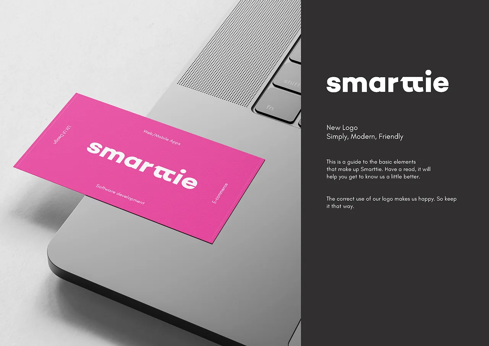
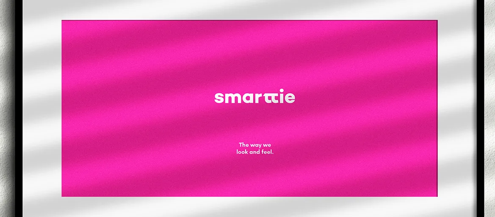
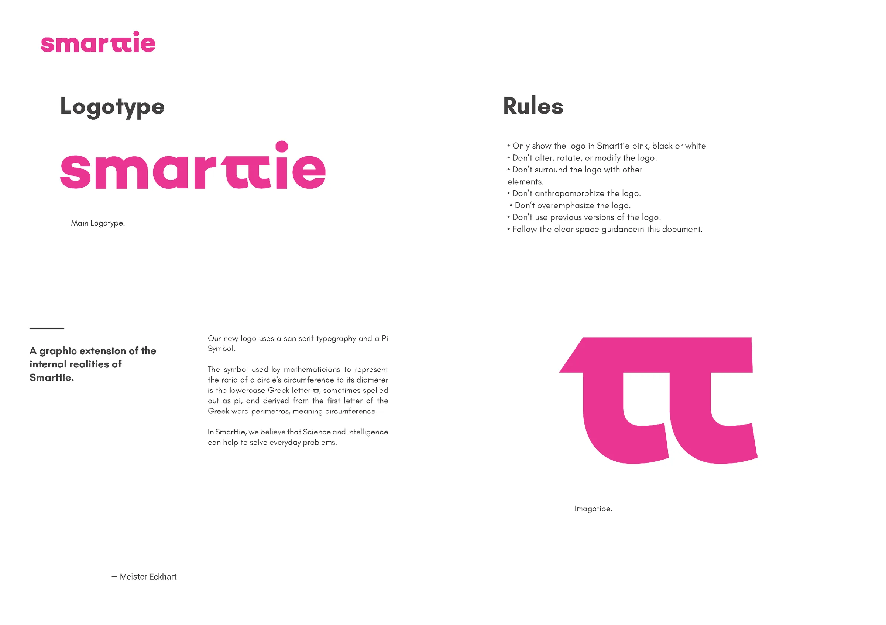
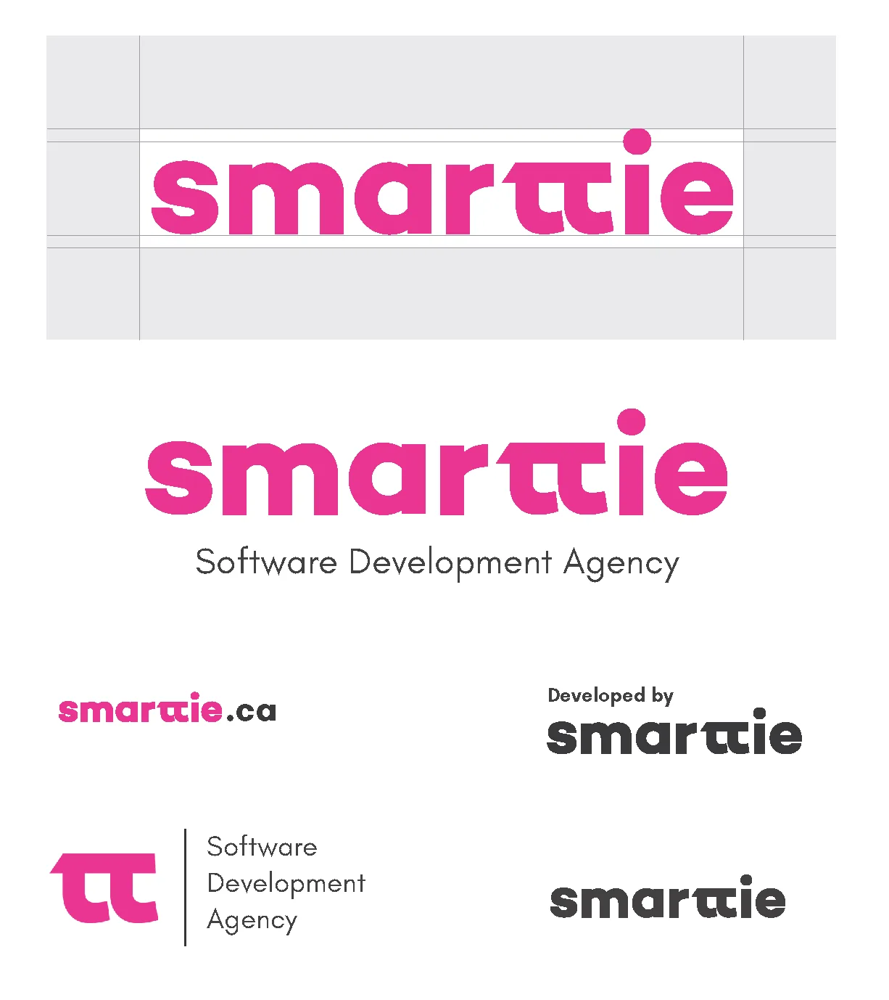
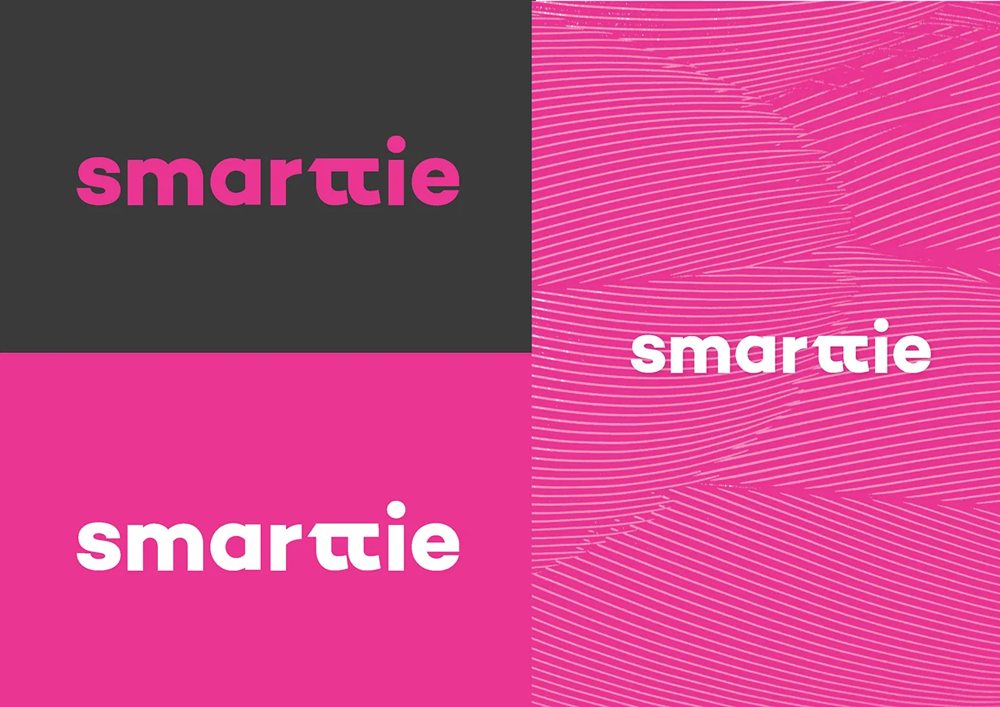
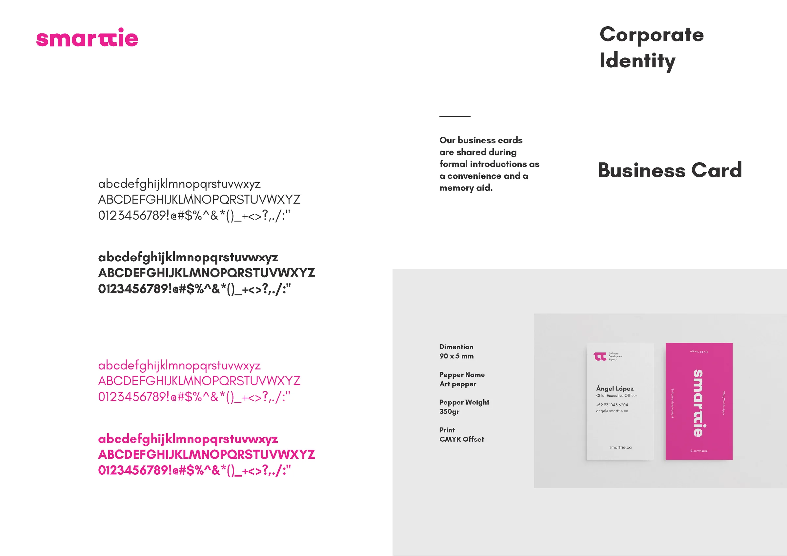
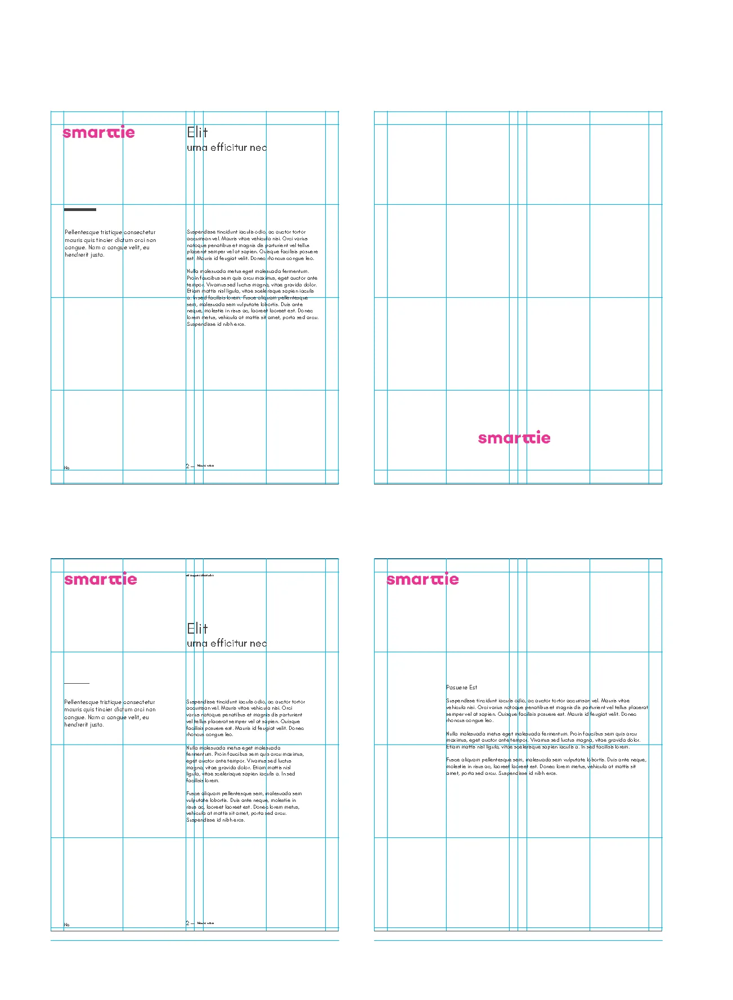
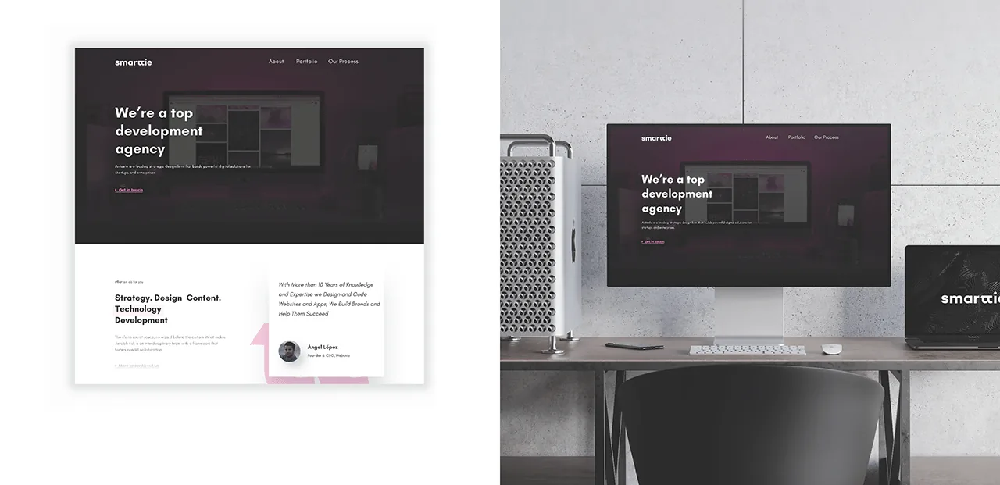
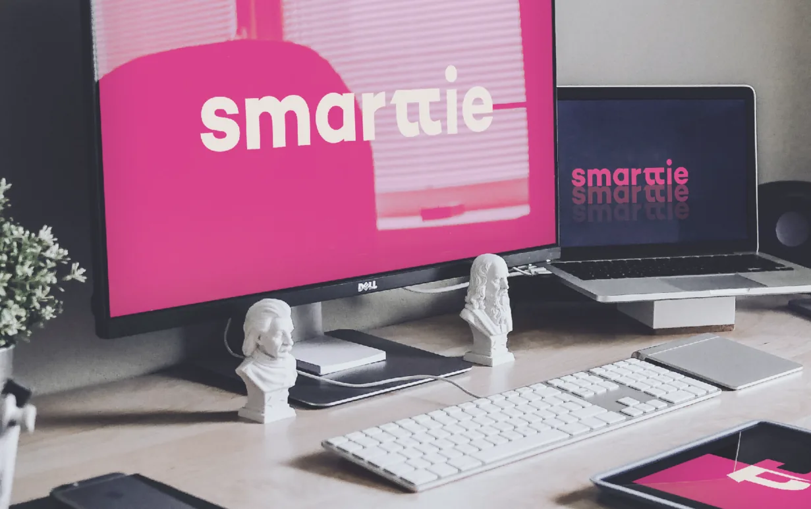

A pragmatic rebrand for a software development agency: a modern logotype and symbol system with documented usage rules, grid guidance, and implementation-ready templates. The system has been in active use for 6 years without structural redesign — the clearest possible signal that a brand system was built right.

Business problem: Smarttie is a software development agency competing for clients who evaluate credibility before engaging. In 2020, the absence of a coherent visual identity created an inconsistency problem: every client-facing asset — proposals, decks, website — looked slightly different. This visual inconsistency signaled operational immaturity to exactly the audience Smarttie was trying to win.
Brand problem: There was no single source of truth for how Smarttie looked. Designers and non-designers were making individual decisions about colors, fonts, and logo usage — producing drift that compounded over time. The problem wasn't lack of quality; it was lack of a system.
The real brief: not "make us look better" — but "make it so anyone on the team can produce a brand-consistent asset without needing a designer every time." That's a systems problem, not a visual problem.
| Area | Who | Notes |
|---|---|---|
| Brand strategy & positioning Shared | With founders | Mission, vision, and target positioning provided by founders; I translated into design principles |
| Logotype design Me | Solo | Full logotype and symbol design — concept through final delivery |
| Color system Me | Solo | Palette selection, contrast validation, approved colorways |
| Typography system Me | Solo | Typeface selection, scale, weight progression, hierarchy rules |
| Governance rules Me | Solo | Clear space, minimum sizes, do/don't rules, proper background usage |
| Grid & digital system Me | Solo | Column grid, spacing system, responsive guidelines |
| Print templates Me | Solo | Business cards, letterhead, envelope — production-ready files |
| Website concept Me | Solo | Applied brand to web layout — for reference, not implementation |
The central strategic choice was to build a deliberately constrained system rather than an expressive one. This was a considered tradeoff: expressive brands give designers more to work with but create more surface area for inconsistency. A constrained system with documented rules produces consistent output even when the person creating the asset isn't a designer.
For a delivery-focused software agency, this was the right tradeoff. Smarttie's brand value comes from reliability and craft — the identity needed to reinforce that, not compete with it.

Early explorations included a symbol-dominant identity — a mark that could stand alone without the wordmark. I moved away from this for a pragmatic reason: software agencies win clients through proposals and decks, not brand recognition at scale. A symbol-dominant identity requires years of exposure to carry meaning alone. A strong logotype communicates the name directly and works at every stage of brand maturity. The symbol exists as a flexible extension for layouts and branded moments — but the wordmark does the primary identity work. This tradeoff prioritized business utility over design ambition.
Rather than a broad palette with flexible application, I defined a small set of approved colorways — specific logo/background combinations that are explicitly permitted. The alternative was a more open system with general rules ("use on light or dark backgrounds"). The problem with open systems: teams interpret "light background" differently, and edge cases accumulate. Documented colorways remove interpretation entirely — you pick from the approved set, not from a principle. This reduced the most common source of brand drift in fast-moving organizations.
Most brand projects prioritize print applications first. I reversed the order: the digital grid system was established before stationery templates because Smarttie's primary client touchpoints are digital — websites, proposals as PDFs, email signatures, decks. Print applications (business cards, letterhead) were templates designed within the grid, not the other way around. This ensured the system was coherent at the highest-frequency use cases before being adapted for lower-frequency ones.

A brand is only as strong as the consistency of its application. The governance section defines minimum sizes, clear space derived from the logotype's cap-height unit, approved colorways by background type, and explicit "do not" examples. The clear space rule uses a relative unit — not a fixed pixel value — so it scales correctly across any reproduction size without requiring recalculation.


Typography decisions were chosen for cross-context reliability: a typeface that reads well on screen at 14px and in print at 9pt, with a weight range that supports hierarchy without requiring custom or licensed fonts that might not be available to every team member. Print templates were designed as locked templates — not as inspiration references — with production specs (bleed, safe zones, CMYK values) embedded in the files.

The digital grid framework provides a shared spatial logic for marketing pages, proposals, and product surfaces. Built on a 12-column base with defined gutters and margin breakpoints, it makes layout decisions predictable and ensures that assets created by different team members stay optically consistent without requiring designer review for every new piece.


The 2020 system rendered live on the current Smarttie website — shown across desktop and iOS Safari, as the brand appears to users today. The clearest possible validation of a brand system is how it holds up in production, six years after being built.
The color system was validated for WCAG 2.1 AA compliance across all approved colorways:
The system was designed to extend without redesign:
The next step — if continuing — would be translating the guidelines into operational tokens: CSS custom properties for the web, a lightweight component library for common marketing blocks, and a QA checklist that makes brand consistency measurable at release time rather than evaluated after the fact.
The most reliable measure of a brand system's quality is how long it survives without requiring a redesign. Smarttie has used this identity consistently for six years — across a website, client proposals, decks, and print materials — without the system breaking down. That's the outcome a brand system is supposed to produce.

{kind=link}
{kind=link}
{kind=link}
{kind=link}
{kind=link}
{kind=link}
{kind=link}
{kind=link}
{kind=link}